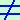

(x-1)·(x2+x+2)  0
devo porre ogni fattore diverso da zero:
- (x-1)
 0 0
- (x2+x+2) 0
Il secondo e' sempre vero perche' il trinomio non e' scomponibile; il primo
si risolve come un'equazione (trasporto il termine noto dall'altra parte del disuguale cambiandolo di segno)
- x ≠ 1
- x2+x+2 ≠ 0 sempre (non lo considero nemmeno)
|